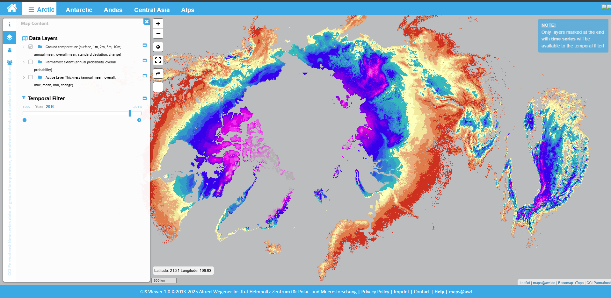

¿Está cambiando? · propuesta editorial
¿Está cambiando el permafrost?
Las mediciones muestran calentamiento del permafrost; el ritmo y las consecuencias varían entre regiones y profundidades.
El permafrost es terreno que permanece a 0 °C o menos al menos dos años consecutivos. Al descongelarse puede cambiar la estabilidad del terreno y liberar parte del carbono como CO₂ o metano; no todo el carbono almacenado se emite de golpe.
Evidencia y límites
Biskaborn et al. estudian 2007–2016 y estiman +0,29 ± 0,12 °C en la red global analizada. Es una observación histórica, no una tasa actual de 2026. Contraste del resumen indexado del artículo; texto completo no accesible en esta revisión.
Biskaborn et al. · Permafrost is warming at a global scale
Datos: 2007–2016. Publicación: 2019. Revisión de texto completo pendiente.
Consulta y revisión efectiva: 11/11/2026 · Responsable de la propuesta: Codex · v0.1 para revisión del responsable.
NSIDC · definición de permafrost. Estudio posterior de permafrost de montaña europeo: registro hasta 2022, alcance regional; consulta limitada al resumen indexado. No sustituye a una actualización global.
Los gráficos externos pueden actualizarse por su cuenta. Esta síntesis permanece legible sin conexión. .
Permafrost
El permafrost es suelo que permanece congelado (≤ 0 °C) durante, al menos, dos años seguidos. Se extiende por el Ártico, subártico y zonas de alta montaña. Cuando se calienta y pierde hielo, el terreno se vuelve inestable y puede liberar carbono almacenado desde hace miles de años.
Conceptos básicos- ¿Dónde está? Alaska, Canadá, Siberia, Mongolia, mesetas tibetanas y cordilleras de media y alta montaña.
- ¿Qué contiene? Suelo, sedimentos y materia orgánica congelada (raíces, restos vegetales, turberas).
- ¿Por qué importa? Estabilidad de infraestructuras, ecosistemas, ciclo del carbono y riesgos locales.
Imagen de permafrost conservada
Captura AWI sin fecha de extracción, profundidad y serie documentadas: no se usa para cuantificar la tendencia revisada.

Fuente: AWI – GlobPermafrost Arctic Ground Temperature. Imagen estática generada a partir del visor oficial.
Cifras clave (para situarnos)
Estos rangos proceden de síntesis científicas (p. ej., informes IPCC y resúmenes árticos anuales). Para más detalle ver los enlaces de “Más info y materiales”.
Qué pasa cuando se descongela
- Terreno inestable: subsidencia, deslizamientos, “termokarst”, afectando carreteras, edificios, oleoductos y pueblos.
- Hidrología alterada: aparición/desaparición de lagos, cambios en ríos y humedales.
- Ecosistemas: cambios en suelos, vegetación y hábitats.
- Salud y patrimonio: contenido heredado sobre brotes y patrimonio, pendiente de fuentes específicas; no se valida aquí una relación causal sanitaria.
- Gases de efecto invernadero: liberación de carbono del suelo (el metano se trata en la página 3.5 · Metano).
Mapa y observación
- NOAA Arctic Report Card: síntesis anual de indicadores árticos (permafrost, nieve, hielo, incendios, etc.).
- NASA Earth Observatory: artículos y visualizaciones didácticas.
- AWI GlobPermafrost: visor interactivo original.
Material didáctico
- ¿Qué es el permafrost? (explicación visual de NASA).
- Indicadores del Ártico (capítulos breves, infografías).
Sugerencia: en futuras versiones se podría insertar un vídeo divulgativo corto.
Preguntas rápidas (FAQ)
¿Todo el permafrost se va a descongelar?
No. Depende del calentamiento global y de las condiciones locales. Incluso descongelamientos parciales generan impactos locales y emisiones de carbono.
¿Se puede “recongelar” fácilmente?
Es difícil. Una vez que el suelo pierde hielo y se deforma, la hidrología y la vegetación cambian, lo que dificulta volver al estado previo.
¿Qué relación tiene con el metano?
El metano (CH₄) puede emitirse tras el deshielo en suelos anóxicos. Se detalla en la página 3.5 · Metano.